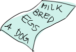

从零开始
Table of Contents
1 从零开始
1.1 准备好了吗？

准备来开始我们的旅程！如果你就是那种从不看说明书的人，我推荐你还是回头看一下简介的最后一节。那里面讲了这个教学中你需要用到的工具及基本用法。我们首先要做的就是进入ghc 的交互模式，接着就可以写几个函数体验一下 Haskell了。打开终端机，输入 =ghci=，你会看到下列欢迎消息：
GHCi, version 6.8.2: http://www.haskell.org/ghc/ :? for help Loading package base ... linking ... done. Prelude>
恭喜您已经进入了 ghci 了！目前它的命令行提示是 prelude> ，不过它在你装载一些模块之后会变的比较长。为了美观起见，我们会输入指令 :set prompt "ghci> " 把它改成 ghci> 。
首先来看一些简单的运算
ghci> 2 + 15 17 ghci> 49 * 100 4900 ghci> 1892 - 1472 420 ghci> 5 / 2 2.5 ghci>
很简单吧！你也可以在一行中使用多个运算子，他们会按照运算子优先级执行计算，而使用括号可以改变执行的优先级。
ghci> (50 * 100) - 4999 1 ghci> 50 * 100 - 4999 1 ghci> 50 * (100 - 4999) -244950
但注意处理负数的时候有个小陷阱：我们执行 5 * -3 会 ghci会回报错误。所以说，使用负数时最好将其置于括号之中，像 5*(-3) 就不会有问题。
要进行布林代数 (Boolean Algebra)的演算也是很直觉的。你也许早就会猜， && 指的是布林代数上的 AND，而 ||=指的是布林代数上的 OR，=not 会把 True 变成
False=，=False 变成 True 。
ghci> True && False False ghci> True && True True ghci> False || True True ghci> not False True ghci> not (True && True) False
相等性可以这样判定
ghci> 5 == 5 True ghci> 1 == 0 False ghci> 5 /= 5 False ghci> 5 /= 4 True ghci> "hello" == "hello" True
那执行 5+"llama"= 或者 =5==True 会怎样？ 如果我们真的试着在 ghci中跑，会得到下列的错误消息：
No instance for (Num [Char]) arising from a use of `+' at :1:0-9 Possible fix: add an instance declaration for (Num [Char]) In the expression: 5 + "llama" In the definition of `it': it = 5 + "llama"
这边 ghci 提示说 ="llama"= 并不是数值型别，所以它不知道该怎样才能给它加上 5。即便是 "four" 甚至是"4" 也不可以，Haskell 不拿它当数值。执行 True==5, ghci
就会提示型别不匹配。 + 运算子要求两端都是数值，而 == 运算子仅对两个可比较的值可用。这就要求他们的型别都必须一致，苹果和橘子就无法做比较。我们会在后面深入地理解型别的概念。Note: 5+4.0 是可以执行的，5 既可以做被看做整数也可以被看做浮点数，但 4.0则不能被看做整数。

也许你并未察觉，不过从始至终我们一直都在使用函数。 * 就是一个将两个数相乘的函数，就像三明治一样，用两个参数将它夹在中央，这被称作中缀函数。而其他大多数不能与数夹在一起的函数则被称作前缀函数。绝大部分函数都是前缀函数，在接下来我们就不多做区别。大多数命令式编程语言中的函数调用形式通常就是函数名，括号，由逗号分隔的参数表。而在Haskell中，函数调用的形式是函数名，空格，空格分隔的参数表。简单举个例子，我们调用Haskell 中最无趣的函数：
ghci> succ 8 9
succ 函数返回一个数的后继 (successor)。而且如你所见，在 Haskell中是用空格来将函数与参数分隔的。至于调用多个参数的函数也很容易， min 和=max= 接受两个可比较大小的参数，并返回较大或者较小的那个数。
ghci> min 9 10 9 ghci> min 3.4 3.2 3.2 ghci> max 100 101 101
函数调用拥有最高的优先级，如下两句是等效的
ghci > succ 9 + max 5 4 + 1 16 ghci> (succ 9) + (max 5 4) + 1 16
若要取 9 乘 10 的后继， succ 9*10 是不行的，程序会先取 9的后继，然后再乘以
10 得 100。正确的写法应该是 succ(9*10) ，得91。如果某函数有两个参数，也可以用 ` 符号将它括起，以中缀函数的形式调用它。
例如取两个整数相除所得商的 div 函数, div 92 10 可得9，但这种形式不容易理解：究竟是哪个数是除数，哪个数被除？使用中缀函数的形式 92 `div` 10 就更清晰了。
从命令式编程语言走过来的人们往往会觉得函数调用与括号密不可分，在 C中，调用函数必加括号，就像 foo(), bar(1),或者 baz(3,"haha") 。而在Haskell 中，函数的调用使用空格，例如 bar (bar 3) ，它并不表示以 bar 和 3 两个参数去调用
bar ，而是以 bar 3 所得的结果作为参数去调用 bar 。在 C 中，就相当于
bar(bar(3)) 。
1.2 初学者的第一个函数
在前一节中我们简单介绍了函数的调用，现在让我们编写我们自己的函数！打开你最喜欢的编辑器，输入如下代码，它的功能就是将一个数字乘以2。
doubleMe x = x + x
函数的声明与它的调用形式大致相同，都是先函数名，后跟由空格分隔的参数表。但在声明中一定要在 = 后面定义函数的行为。
保存为 baby.hs 或任意名称，然后转至保存的位置，打开 ghci，执行 :l baby.hs
。这样我们的函数就装载成功，可以调用了。
ghci> :l baby [1 of 1] Compiling Main ( baby.hs, interpreted ) Ok, modules loaded: Main. ghci> doubleMe 9 18 ghci> doubleMe 8.3 16.6
+ 运算子对整数和浮点都可用(实际上所有有数字特征的值都可以)，所以我们的函数可以处理一切数值。声明一个包含两个参数的函数如下：
doubleUs x y = x*2 + y*2
很简单。将其写成 doubleUs x y = x + x + y + y 也可以。测试一下(记住要保存为
baby.hs 并到 ghci 下边执行 :l baby.hs)
ghci> doubleUs 4 9 26 ghci> doubleUs 2.3 34.2 73.0 ghci> doubleUs 28 88 + doubleMe 123 478
你可以在其他函数中调用你编写的函数，如此一来我们可以将 =doubleUs=函数改为：
doubleUs x y = doubleMe x + doubleMe y

这种情形在 Haskell下边十分常见：编写一些简单的函数，然后将其组合，形成一个较为复杂的函数，这样可以减少重复工作。设想若是哪天有个数学家验证说2 应该是 3，我们只需要将 doubleMe 改为 x+x+x 即可，由于 doubleUs 调用到 doubleMe
，于是整个程序便进入了 2 即是 3 的古怪世界。
Haskell 中的函数并没有顺序，所以先声明 doubleUs 还是先声明 doubleMe 都是同样的。如下，我们编写一个函数，它将小于 100 的数都乘以 2，因为大于100 的数都已经足够大了！
doubleSmallNumber x = if x > 100 then x else x*2
接下来介绍 Haskell 的 if 语句。你也许会觉得和其他语言很像，不过存在一些不同。
Haskell 中 if 语句的 else 部分是不可省略。在命令式语言中，你可以通过 if
语句来跳过一段代码，而在 Haskell 中，每个函数和表达式都要返回一个结果。对于这点我觉得将 if 语句置于一行之中会更易理解。Haskell 中的 if 语句的另一个特点就是它其实是个表达式，表达式就是返回一个值的一段代码：5是个表达式，它返回
5； 4+8 是个表达式；=x+y= 也是个表达式，它返回 x+y 的结果。正由于 else
是强制的， if 语句一定会返回某个值，所以说 if 语句也是个表达式。如果要给刚刚定义的函数的结果都加上 1，可以如此修改：
doubleSmallNumber' x = (if x > 100 then x else x*2) + 1
若是去掉括号，那就会只在小于 100 的时候加1。注意函数名最后的那个单引号，它没有任何特殊含义，只是一个函数名的合法字符罢了。通常，我们使用单引号来区分一个稍经修改但差别不大的函数。定义这样的函数也是可以的：
conanO'Brien = "It's a-me, Conan O'Brien!"
在这里有两点需要注意。首先就是我们没有大写 =conan=的首字母，因为首字母大写的函数是不允许的，稍后我们将讨论其原因；另外就是这个函数并没有任何参数。没有参数的函数通常被称作"定义"(或者"名字")，一旦定义， conanO'Brien 就与字串
="It's a-me, Conan O'Brien!"= 完全等价，且它的值不可以修改。
1.3 List 入门

在 Haskell 中，List就像现实世界中的购物单一样重要。它是最常用的数据结构，并且十分强大，灵活地使用它可以解决很多问题。本节我们将对List，字串和 list comprehension 有个初步了解。 在 Haskell 中，List是一种单型别的数据结构，可以用来存储多个型别相同的元素。我们可以在里面装一组数字或者一组字符，但不能把字符和数字装在一起。
*Note*: 在 ghci 下，我们可以使用 let 关键字来定义一个常量。在 ghci 下执行 let a=1 与在脚本中编写 a=1 是等价的。
ghci> let lostNumbers = [4,8,15,16,23,48] ghci> lostNumbers [4,8,15,16,23,48]
如你所见，一个 List 由方括号括起，其中的元素用逗号分隔开来。若试图写
[1,2,'a',3,'b','c',4] 这样的 List，Haskell就会报出这几个字符不是数字的错误。字串实际上就是一组字符的 List，"Hello"只是 ['h','e','l','l','o'] 的语法糖而已。所以我们可以使用处理 List的函数来对字串进行操作。 将两个 List 合并是很常见的操作，这可以通过 ++ 运算子实现。
ghci> [1,2,3,4] ++ [9,10,11,12] [1,2,3,4,9,10,11,12] ghci> "hello" ++ " " ++ "world" "hello world" ghci> ['w','o'] ++ ['o','t'] "woot"
在使用 ++ 运算子处理长字串时要格外小心(对长 List 也是同样)，Haskell会遍历整个的 List(++ 符号左边的那个)。在处理较短的字串时问题还不大，但要是在一个
5000万长度的 List 上追加元素，那可得执行好一会儿了。所以说，用 : 运算子往一个 List 前端插入元素会是更好的选择。
ghci> 'A':" SMALL CAT" "A SMALL CAT" ghci> 5:[1,2,3,4,5] [5,1,2,3,4,5]
: 运算子可以连接一个元素到一个 List 或者字串之中，而 ++ 运算子则是连接两个 List。若要使用 ++ 运算子连接单个元素到一个 List之中，就用方括号把它括起使之成为单个元素的 List。 [1,2,3] 实际上是 1:2:3:[] 的语法糖。 [] 表示一个空 List,若要从前端插入 3，它就成了 [3], 再插入 2，它就成了 [2,3] ，以此类推。
*Note*: [],[[]],[[],[],[]] 是不同的。第一个是一个空的 List，第二个是含有一个空 List 的 List，第三个是含有三个空 List 的 List。
若是要按照索引取得 List 中的元素，可以使用 !! 运算子，索引的下标为 0。
ghci> "Steve Buscemi" !! 6 'B' ghci> [9.4,33.2,96.2,11.2,23.25] !! 1 33.2
但你若是试图在一个只含有 4 个元素的 List 中取它的第 6个元素，就会报错。要小心！
List 同样也可以用来装 List，甚至是 List 的 List 的 List：
ghci> let b = [[1,2,3,4],[5,3,3,3],[1,2,2,3,4],[1,2,3]] ghci> b [[1,2,3,4],[5,3,3,3],[1,2,2,3,4],[1,2,3]] ghci> b ++ [[1,1,1,1]] [[1,2,3,4],[5,3,3,3],[1,2,2,3,4],[1,2,3],[1,1,1,1]] ghci> [6,6,6]:b [[6,6,6],[1,2,3,4],[5,3,3,3],[1,2,2,3,4],[1,2,3]] ghci> b !! 2 [1,2,2,3,4]
List 中的 List 可以是不同长度，但必须得是相同的型别。如不可以在 List中混合放置字符和数组相同，混合放置数值和字符的 List 也是同样不可以的。当List 内装有可比较的元素时，使用 > 和 >= 可以比较 List的大小。它会先比较第一个元素，若它们的值相等，则比较下一个，以此类推。
ghci> [3,2,1] > [2,1,0] True ghci> [3,2,1] > [2,10,100] True ghci> [3,4,2] > [3,4] True ghci> [3,4,2] > [2,4] True ghci> [3,4,2] == [3,4,2] True
还可以对 List 做啥？如下是几个常用的函数:
head 返回一个 List 的头部，也就是 List 的首个元素。
ghci> head [5,4,3,2,1] 5
tail 返回一个 List 的尾部，也就是 List 除去头部之后的部分。
ghci> tail [5,4,3,2,1] [4,3,2,1]
last 返回一个 List 的最后一个元素。
ghci> last [5,4,3,2,1] 1
init 返回一个 List 除去最后一个元素的部分。
ghci> init [5,4,3,2,1] [5,4,3,2]
如果我们把 List 想象为一头怪兽，那这就是它的样子：

试一下，若是取一个空 List 的 head 又会怎样？
ghci> head [] *** Exception: Prelude.head: empty list
糟糕，程序直接跳出错误。如果怪兽都不存在的话，那他的头也不会存在。在使用
head=，=tail=，=last 和 init 时要小心别用到空的 List上，这个错误不会在编译时被捕获。所以说做些工作以防止从空 List中取值会是个好的做法。
length 返回一个 List 的长度。
ghci> length [5,4,3,2,1] 5
null 检查一个 List 是否为空。如果是，则返回 True ，否则返回=False= 。应当避免使用 xs == [] 之类的语句来判断 List 是否为空，使用 null 会更好。
ghci> null [1,2,3] False ghci> null [] True
reverse 将一个 List 反转:
ghci> reverse [5,4,3,2,1] [1,2,3,4,5]
take 返回一个 List 的前几个元素，看：
ghci> take 3 [5,4,3,2,1] [5,4,3] ghci> take 1 [3,9,3] [3] ghci> take 5 [1,2] [1,2] ghci> take 0 [6,6,6] []
如上，若是图取超过 List 长度的元素个数，只能得到原 List。若 take 0=个元素，则会得到一个空 List！ =drop 与 take 的用法大体相同，它会删除一个 List 中的前几个元素。
ghci> drop 3 [8,4,2,1,5,6] [1,5,6] ghci> drop 0 [1,2,3,4] [1,2,3,4] ghci> drop 100 [1,2,3,4] []
maximum 返回一个 List 中最大的那个元素。 minimun 返回最小的。
ghci> minimum [8,4,2,1,5,6] 1 ghci> maximum [1,9,2,3,4] 9
sum 返回一个 List 中所有元素的和。 product 返回一个 List中所有元素的积。
ghci> sum [5,2,1,6,3,2,5,7] 31 ghci> product [6,2,1,2] 24 ghci> product [1,2,5,6,7,9,2,0] 0
elem 判断一个元素是否在包含于一个 List，通常以中缀函数的形式调用它。
ghci> 4 `elem` [3,4,5,6] True ghci> 10 `elem` [3,4,5,6] False
这就是几个基本的 List 操作函数，我们会在往后的一节中了解更多的函数。
1.4 使用 Range
今天如果想得到一个包含 1 到 20 之间所有数的 List，你会怎么做? 我们可以将它们一个一个用键盘打出来，但很明显地这不是一个完美的方案，特别是你追求一个好的编程语言的时候。我们想用的是区间(Range)。Range 是构造 List 方法之一，而其中的值必须是可枚举的，像1、2、3、4…字符同样也可以枚举，字母表就是 A..Z 所有字符的枚举。而名字就不可以枚举了， ="john"= 后面是谁？我不知道。
要得到包含 1 到 20 中所有自然数的 List，只要 [1..20] 即可，这与用手写
[1,2,3,4,5,6,7,8,9,10,11,12,13,14,15,16,17,18,19,20] 是完全等价的。其实用手写一两个还不是什么大事，但若是手写一个非常长的List 那就铁定是个笨方法。
ghci> [1..20] [1,2,3,4,5,6,7,8,9,10,11,12,13,14,15,16,17,18,19,20] ghci> ['a'..'z'] "abcdefghijklmnopqrstuvwxyz" ghci> ['K'..'Z'] "KLMNOPQRSTUVWXYZ"
Range的特点是他还允许你指定每一步该跨多远。譬如说，今天的问题换成是要得到 1到 20 间所有的偶数或者 3 的倍数该怎样？
ghci> [2,4..20] [2,4,6,8,10,12,14,16,18,20] ghci> [3,6..20] [3,6,9,12,15,18]
仅需用逗号将前两个元素隔开，再标上上限即可。尽管 Range很聪明，但它恐怕还满足不了一些人对它的期许。你就不能通过 [1,2,4..100] 这样的语句来获得所有 2的幂。一方面是因为步长只能标明一次，另一方面就是仅凭前几项，数组的后项是不能确定的。要得到20 到 1 的 List， [20..1] 是不可以的。必须得 [20,19..1] 。 在 Range
中使用浮点数要格外小心！出于定义的原因，浮点数并不精确。若是使用浮点数的话，你就会得到如下的糟糕结果
ghci> [0.1, 0.3 .. 1] [0.1,0.3,0.5,0.7,0.8999999999999999,1.0999999999999999]
我的建议就是避免在 Range 中使用浮点数。
你也可以不标明 Range 的上限，从而得到一个无限长度的List。在后面我们会讲解关于无限 List 的更多细节。取前 24 个 13的倍数该怎样？恩，你完全可以
[13,26..24*13] ，但有更好的方法： take 24 [13,26..] 。
由于 Haskell 是惰性的，它不会对无限长度的 List求值，否则会没完没了的。它会等着，看你会从它那儿取多少。在这里它见你只要24 个元素，便欣然交差。如下是几个生成无限 List 的函数 cycle 接受一个List 做参数并返回一个无限 List。如果你只是想看一下它的运算结果而已，它会运行个没完的。所以应该在某处划好范围。
ghci> take 10 (cycle [1,2,3]) [1,2,3,1,2,3,1,2,3,1] ghci> take 12 (cycle "LOL ") "LOL LOL LOL "
repeat 接受一个值作参数，并返回一个仅包含该值的无限 List。这与用=cycle= 处理单元素 List 差不多。
ghci> take 10 (repeat 5) [5,5,5,5,5,5,5,5,5,5]
其实，你若只是想得到包含相同元素的 List ，使用 replicate 会更简单，如
replicate 3 10 ，得 [10,10,10] 。
1.5 List Comprehension

学过数学的你对集合的 comprehension (Set Comprehension)概念一定不会陌生。通过它，可以从既有的集合中按照规则产生一个新集合。前十个偶数的set comprehension可以表示为 ，竖线左端的部分是输出函数，
，竖线左端的部分是输出函数， x 是变量， N 是输入集合。在 Haskell 下，我们可以通过类似 take 10 [2,4..] 的代码来实现。但若是把简单的乘 2改成更复杂的函数操作该怎么办呢？用 list comprehension，它与
set comprehension 十分的相似，用它取前十个偶数轻而易举。这个 list
comprehension 可以表示为：
ghci> [x*2 | x <- [1..10]] [2,4,6,8,10,12,14,16,18,20]
如你所见，结果正确。给这个 comprehension 再添个限制条件(predicate)，它与前面的条件由一个逗号分隔。在这里，我们要求只取乘以 2后大于等于 12 的元素。
ghci> [x*2 | x <- [1..10], x*2 >= 12] [12,14,16,18,20]
cool，灵了。若是取 50 到 100 间所有除7的余数为 3 的元素该怎么办？简单：
ghci> [ x | x <- [50..100], x `mod` 7 == 3] [52,59,66,73,80,87,94]
成功！从一个 List 中筛选出符合特定限制条件的操作也可以称为过滤(filtering)。即取一组数并且按照一定的限制条件过滤它们。再举个例子吧，假如我们想要一个 comprehension，它能够使 List 中所有大于 10的奇数变为 ="BANG"= ，小于 10 的奇数变为 ="BOOM"= ，其他则统统扔掉。方便重用起见，我们将这个 comprehension置于一个函数之中。
boomBangs xs = [ if x < 10 then "BOOM!" else "BANG!" | x <- xs, odd x]
这个 comprehension 的最后部分就是限制条件，使用 odd 函数判断是否为奇数：返回 True ，就是奇数，该 List 中的元素才被包含。
ghci> boomBangs [7..13] ["BOOM!","BOOM!","BANG!","BANG!"]
也可以加多个限制条件。若要达到 10 到 20 间所有不等于 13，15 或 19的数，可以这样：
ghci> [ x | x <- [10..20], x /= 13, x /= 15, x /= 19] [10,11,12,14,16,17,18,20]
除了多个限制条件之外，从多个 List 中取元素也是可以的。这样的话comprehension
会把所有的元素组合交付给我们的输出函数。在不过滤的前提下，取自两个长度为 4 的集合的 comprehension 会产生一个长度为 16 的List。假设有两个 List， [2,5,10]
和 [8,10,11] ，要取它们所有组合的积，可以这样：
ghci> [ x*y | x <- [2,5,10], y <- [8,10,11]] [16,20,22,40,50,55,80,100,110]
意料之中，得到的新 List 长度为 9。若只取乘积大于 50 的结果该如何？
ghci> [ x*y | x <-[2,5,10], y <- [8,10,11], x*y > 50] [55,80,100,110]
取个包含一组名词和形容词的 List comprehension 吧，写诗的话也许用得着。
ghci> let nouns = ["hobo","frog","pope"] ghci> let adjectives = ["lazy","grouchy","scheming"] ghci> [adjective ++ " " ++ noun | adjective <- adjectives, noun <- nouns] ["lazy hobo","lazy frog","lazy pope","grouchy hobo","grouchy frog", "grouchy pope","scheming hobo", "scheming frog","scheming pope"]
明白！让我们编写自己的 length 函数吧！就叫做 length' !
length' xs = sum [1 | _ <- xs]
_ 表示我们并不关心从 List中取什么值，与其弄个永远不用的变量，不如直接一个
=_=。这个函数将一个List 中所有元素置换为 1，并且使其相加求和。得到的结果便是我们的 List长度。友情提示：字串也是 List，完全可以使用 list comprehension来处理字串。如下是个除去字串中所有非大写字母的函数：
removeNonUppercase st = [ c | c <- st, c `elem` ['A'..'Z']]
测试一下：
ghci> removeNonUppercase "Hahaha! Ahahaha!" "HA" ghci> removeNonUppercase "IdontLIKEFROGS" "ILIKEFROGS"
在这里，限制条件做了所有的工作。它说：只有在 ['A'..'Z'] 之间的字符才可以被包含。
若操作含有 List 的 List，使用嵌套的 List comprehension也是可以的。假设有个包含许多数值的 List 的List，让我们在不拆开它的前提下除去其中的所有奇数：
ghci> let xxs = [[1,3,5,2,3,1,2,4,5],[1,2,3,4,5,6,7,8,9],[1,2,4,2,1,6,3,1,3,2,3,6]] ghci> [ [ x | x <- xs, even x ] | xs <- xxs] [[2,2,4],[2,4,6,8],[2,4,2,6,2,6]]
将 List Comprehension 分成多行也是可以的。若非在 ghci 之下，还是将 List Comprehension 分成多行好，尤其是需要嵌套的时候。
1.6 Tuple

从某种意义上讲，Tuple (元组)很像 List –都是将多个值存入一个个体的容器。但它们却有着本质的不同，一组数字的List 就是一组数字，它们的型别相同，且不关心其中包含元素的数量。而 Tuple则要求你对需要组合的数据的数目非常的明确，它的型别取决于其中项的数目与其各自的型别。Tuple中的项由括号括起，并由逗号隔开。
另外的不同之处就是 Tuple 中的项不必为同一型别，在 Tuple里可以存入多态别项的组合。
动脑筋，在 Haskell 中表示二维矢量该如何？使用 List是一种方法，它倒也工作良好。若要将一组矢量置于一个 List中来表示平面图形又该怎样？我们可以写类似
[[1,2],[8,11],[4,5]] 的代码来实现。但问题在于， [[1,2],[8,11,5],[4,5]] 也是同样合法的，因为其中元素的型别都相同。尽管这样并不靠谱，但编译时并不会报错。然而一个长度为2 的 Tuple (也可以称作序对，Pair)，是一个独立的类型，这便意味着一个包含一组序对的 List不能再加入一个三元组，所以说把原先的方括号改为圆括号使用 Tuple 会 更好: [(1,2),(8,11),(4,5)] 。若试图表示这样的图形：
[(1,2),(8,11,5),(4,5)] ，就会报出以下的错误：
Couldn't match expected type `(t, t1)' against inferred type `(t2, t3, t4)' In the expression: (8, 11, 5) In the expression: [(1, 2), (8, 11, 5), (4, 5)] In the definition of `it': it = [(1, 2), (8, 11, 5), (4, 5)]
这告诉我们说程序在试图将序对和三元组置于同一 List中，而这是不允许的。同样
[(1,2),("one",2)] 这样的 List 也不行，因为其中的第一个 Tuple 是一对数字，而第二个 Tuple却成了一个字串和一个数字。Tuple可以用来保存多个数据，如，我们要表示一个人的名字与年 龄，可以使用这样的Tuple: ("Christopher", "Walken", 55)
。从这个例子里也可以看出，Tuple中也可以存储 List。
使用 Tuple 前应当事先明确一条数据中应该由多少个项。每个不同长度的 Tuple都是独立的型别，所以你就不可以写个函数来给它追加元素。而唯一能做的，就是通过函数来给一个List 追加序对，三元组或是四元组等内容。
可以有单元素的 List，但 Tuple 不行。想想看，单元素的 Tuple本身就只有一个值，对我们又有啥意义？不靠谱。
同 List 相同，只要其中的项是可比较的，Tuple也可以比较大小，只是你不可以像比较不同长度的 List 那样比较不同长度的Tuple 。如下是两个有用的序对操作函数：
fst 返回一个序对的首项。
ghci> fst (8,11) 8 ghci> fst ("Wow", False) "Wow"
snd 返回序对的尾项。
ghci> snd (8,11) 11 ghci> snd ("Wow", False) False
*Note*：这两个函数仅对序对有效，而不能应用于三元组，四元组和五元组之上。稍后，我们将过一遍从 Tuple 中取数据的所有方式。
有个函数很 cool，它就是 =zip=。它可以用来生成一组序对 (Pair) 的List。它取两个 List，然后将它们交叉配对，形成一组序对的List。它很简单，却很实用，尤其是你需要组合或是遍历两个 List时。如下是个例子：
ghci> zip [1,2,3,4,5] [5,5,5,5,5] [(1,5),(2,5),(3,5),(4,5),(5,5)] ghci> zip [1 .. 5] ["one", "two", "three", "four", "five"] [(1,"one"),(2,"two"),(3,"three"),(4,"four"),(5,"five")]
它把元素配对并返回一个新的List。第一个元素配第一个，第二个元素配第二个..以此类推。注意，由于序对中可以含有不同的型别，=zip=函数可能会将不同型别的序对组合在一起。若是两个不同长度的 List 会怎么样？
ghci> zip [5,3,2,6,2,7,2,5,4,6,6] ["im","a","turtle"] [(5,"im"),(3,"a"),(2,"turtle")]
较长的那个会在中间断开，去匹配较短的那个。由于 Haskell 是惰性的，使用=zip= 同时处理有限和无限的 List 也是可以的：
ghci> zip [1..] ["apple", "orange", "cherry", "mango"] [(1,"apple"),(2,"orange"),(3,"cherry"),(4,"mango")]
接下来考虑一个同时应用到 List 和 Tuple的问题：如何取得所有三边长度皆为整数且小于等于 10，周长为 24的直角三角形？首先，把所有三遍长度小于等于 10 的三角形都列出来：
ghci> let triangles = [ (a,b,c) | c <- [1..10], b <- [1..10], a <- [1..10] ]
刚才我们是从三个 List中取值，并且通过输出函数将其组合为一个三元组。只要在
ghci 下边调用triangle，你就会得到所有三边都小于等于 10的三角形。我们接下来给它添加一个限制条件，令其必须为直角三角形。同时也考虑上 b 边要短于斜边， a
边要短于 b 边情况：
ghci> let rightTriangles = [ (a,b,c) | c <- [1..10], b <- [1..c], a <- [1..b], a^2 + b^2 == c^2]
已经差不多了。最后修改函数，告诉它只要周长为 24 的三角形。
ghci> let rightTriangles' = [ (a,b,c) | c <- [1..10], b <- [1..c], a <- [1..b], a^2 + b^2 == c^2, a+b+c == 24] ghci> rightTriangles' [(6,8,10)]
得到正确结果！这便是函数式编程语言的一般思路：先取一个初始的集合并将其变形，执行过滤条件，最终取得正确的结果。